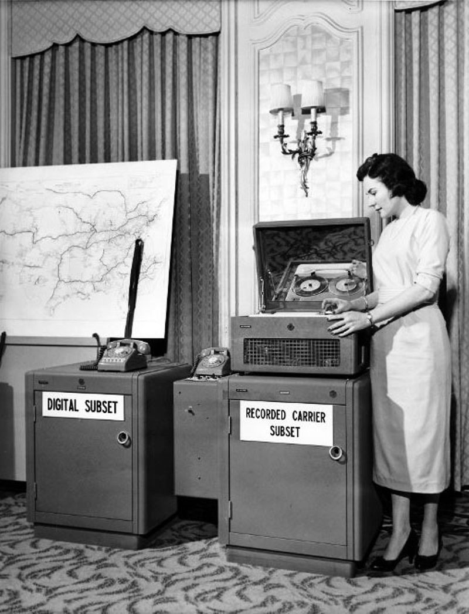

Linhas do Tempo

Computadores
Explore a evolução das máquinas computacionais através das décadas.

Internet e Redes
A jornada da conexão global desde seus primórdios.

Dispositivos de Armazenamento
De cartões perfurados aos SSDs de alta capacidade.

Pessoas Importantes
Conheça os pioneiros que moldaram a história da computação.

Software e Linguagens de Programação
A história do desenvolvimento de software e linguagens.
AI e Robótica
O desenvolvimento da inteligência artificial e automação.

Videogames
A evolução da indústria dos jogos eletrônicos.

Memória
A evolução dos componentes de armazenamento temporário.